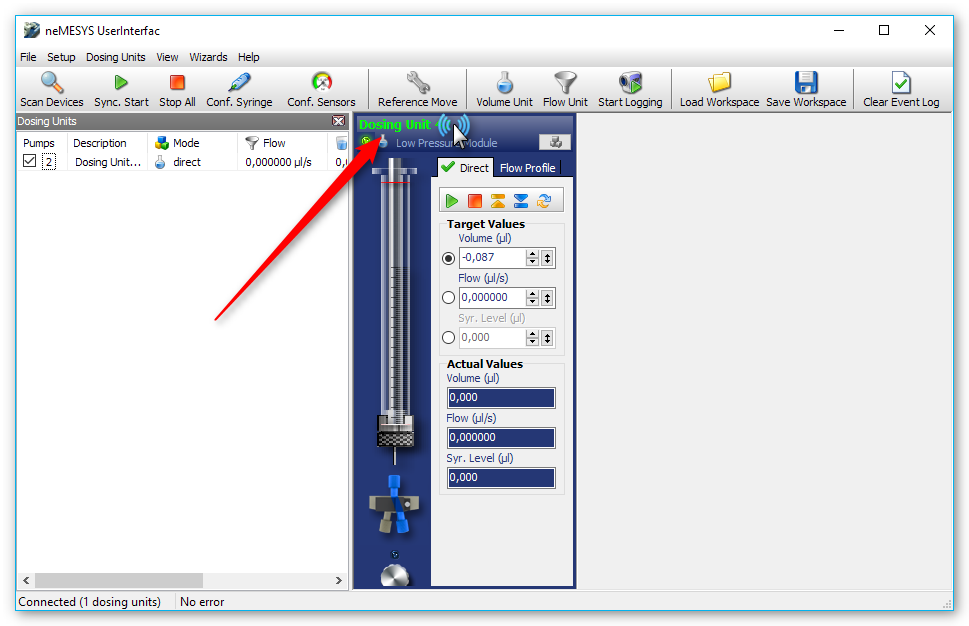
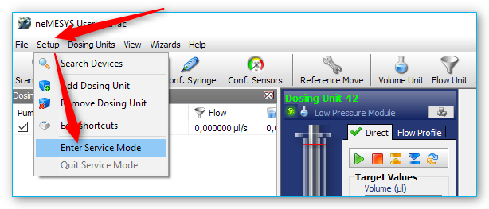
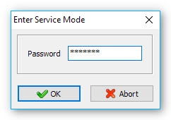
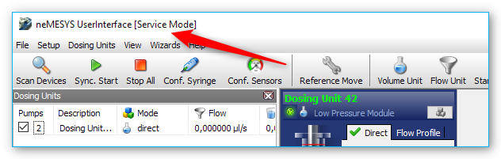
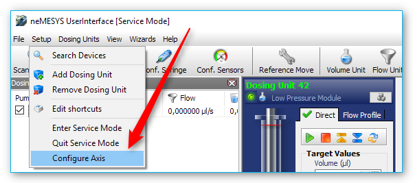
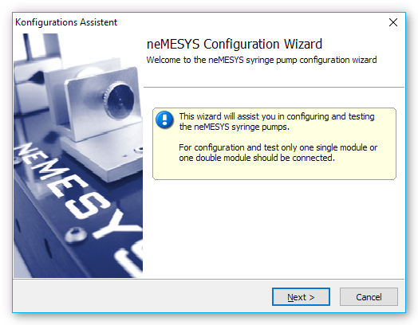
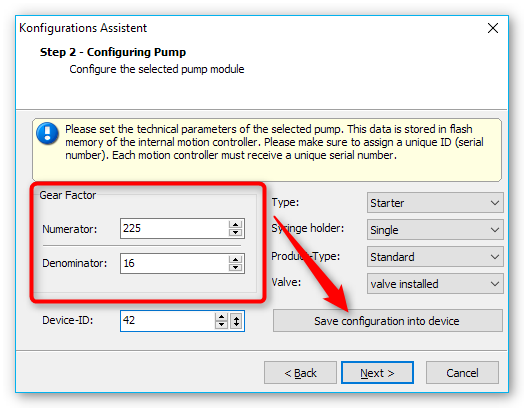
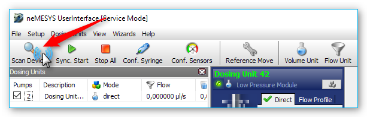

5. Nemesys UserInterface
5.1. Edit Device Configuration
5.1.1. Starting the Configuration Wizard
Start the Nemesys UserInterface and scan for devices with your pump attached. Select the pump you would like to configure by clicking on the label on top of the pump. The label of the selected pump will be highlighted green.
Enter the service mode by clicking the menu item .
Enter the service password epos241 into the password field that appears.
The title bar now indicates that you are working in service mode.
Select the menu item from the main menu
The Nemesys Configuration Wizard appears.
Click the Next button until you see the desired configuration page.
5.1.2. Setting the Gear Factor
Start the configuration wizard like written in the section above and navigate to the wizard page Step 2 – Configuring Pump. On this page, you can see the gear factor on the left:
Ensure that the gear factor matches the physical device configuration and modify it accordingly. Finally click Save configuration into device to store the changes in non-volatile device memory. Then close the configuration wizard and execute a device scan to apply your changes.
